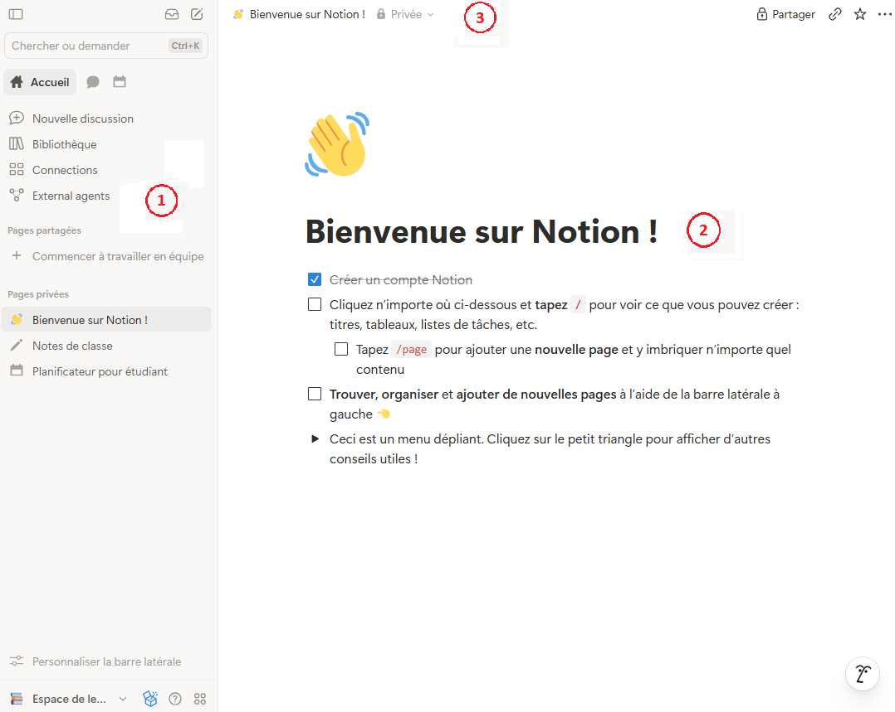
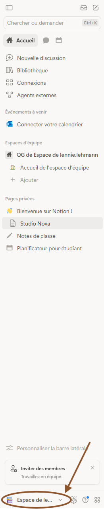
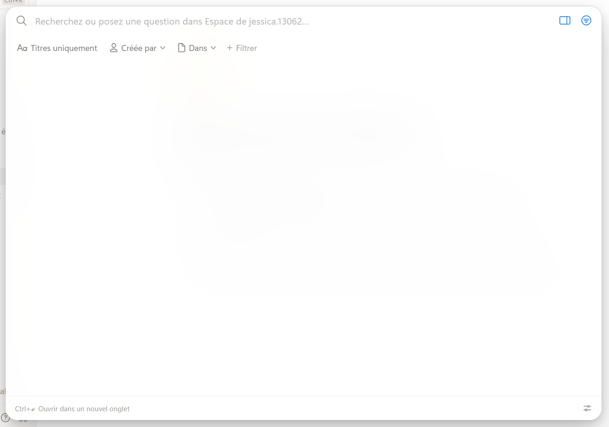

Se repérer dans l'interface
Étape 1 : comprendre
À retenir
L'écran de Notion a 3 zones. La plus importante est la barre latérale : c'est le sommaire de ton espace.
Les 3 zones de l'écran
- La barre latéraleÀ gaucheLe sommaire de ton espace. Elle liste tes pages.
- La pageAu centreLà où tu lis et où tu écris.
- La barre du hautAu-dessus de la pageElle montre où tu es. Elle contient « Partager ».

Dans la barre latérale
De haut en bas, voici ce qui sert pour débuter.
- Les icônes du haut
- Masquer la barre, ouvrir la Boîte de réception (tes notifications), créer un Nouvel élément.
- « Chercher ou demander »
- Retrouver une page en tapant quelques mots.
- « Accueil »
- Ta page de départ, avec tes pages récentes.
- « Nouvelle page »
- Créer une page.
- « Pages partagées »
- Les pages partagées avec quelques personnes.
- « Pages privées »
- Les pages que toi seul vois. « + Ajouter » y crée une page.
- Tout en bas
- Le nom de ton espace de travail. Un clic ouvre les paramètres.
Les autres éléments (tu peux les ignorer pour l'instant)
- « Chercher ou demander » sert aussi à poser une question à l'IA de Notion. Cette formation ne l'utilise pas.
- À côté d'« Accueil » : la bulle ouvre les discussions avec l'IA, le calendrier ouvre les réunions.
- « Nouvelle discussion » et « Bibliothèque » : discuter avec l'IA et parcourir tout le contenu de l'espace.
- « Connexions » et « Agents externes » peuvent apparaître selon ta version de Notion.
- « Espaces d'équipe » peut apparaître selon l'abonnement de ton entreprise.
- « Favoris » apparaît dès que tu épingles une page.
- « Personnaliser la barre latérale » se trouve tout en bas, au-dessus du nom de l'espace.
Mot cléEspace de travail : toutes les pages d'une personne ou d'une équipe.
Attention : une page dans « Pages privées » n'est visible que par toi.
Pour ton équipe, il faudra la partager ou la déplacer. Tu l'apprendras au module 7.
Dans la barre du haut
- Le fil d'Ariane
- Le chemin de la page ouverte, comme une adresse.
Exemple : « Studio Nova / Projets / Site Orion ». - « Privée »
- Qui peut voir la page.
- À droite
- « Partager », copier le lien, l'étoile des favoris, le menu « ··· ».
Un bouton a changé de place ? Notion modifie parfois son interface.
Tape le nom du bouton dans la recherche.
Faire le tour de l'interface
- Ouvre Notion et regarde la barre latérale, à gauche. Repère le nom de ton espace, tout en bas.

- En haut de la barre latérale, clique sur « Chercher ou demander ». Une fenêtre de recherche s'ouvre au centre de l'écran.

- Appuie sur la touche Esc pour la fermer.
- Tout en haut à droite de la barre latérale, repère l'icône de la Boîte de réception. C'est là que tu verras quand un collègue te mentionne.
- Descends dans la barre latérale jusqu'à la section « Pages privées ». C'est là que se rangent les pages que toi seul vois.
- Masque la barre latérale avec le bouton tout en haut à gauche de celle-ci. Pour la réafficher, clique sur le bouton qui reste visible en haut à gauche de l'écran.
Astuce : pour rechercher sans passer par la barre latérale, utilise le raccourci Ctrl + K (Cmd + K sur Mac).
Objectif de la leçon
Tu sais maintenant reconnaître les trois zones de l'écran de Notion et retrouver une page grâce à la barre latérale ou à la recherche.
Choisis une réponse avant de valider.
La recherche retrouve une page à partir de quelques mots de son titre ou de son contenu. C'est plus rapide que de parcourir la barre latérale. La Corbeille ne contient que les pages supprimées, et les Paramètres, accessibles depuis le nom de ton espace, servent à régler ton compte.
Choisis une réponse avant de valider.
« Pages privées » porte bien son nom : ce qui s'y trouve n'est visible que par toi. Pour une page d'équipe, il faudra la partager ou la ranger dans un endroit partagé.
Choisis une réponse avant de valider.
C'est le fil d'Ariane. Il montre où se trouve la page : « Site Orion » est rangée dans « Projets », elle-même rangée dans « Studio Nova ». Un clic sur « Projets » te fait remonter d'un niveau.